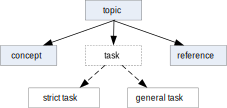

The
general task information type was introduced in
DITA 1.2
as a less prescriptive alternative to the task (or
strict task) information type.
In DITA 1.2, the task information type was separated into
general task and strict task. Technically speaking, the
general task is now the base task information type, because strict type
is implemented as a constrained version of general task.
Task information types in base DITA 1.2

For documenting most procedures, the
strict task is the more appropriate choice. Conceptually, it
is best to think of the
task information type as meaning
strict task. The
strict task information type is the equivalent of the
DITA 1.1
task, while the general task has much more relaxed content
rules.
Wherever possible, you should prefer the
strict task. If your
organisation's
content model is more appropriately served by general task, then stick to
general task across the document repository. Avoid mixing
strict task and
general task in the same publication.
DITA 1.2 introduces the General Task Model as an alternative
to the DITA 1.0 and 1.1 Strict Task Model. It also adds
capabilities to the <steps> content unit for both task models.
Use the DITA General Task Model when your information model calls for a task structure
that is not well supported by the DITA Strict Task Model or when you need to constrain
the elements in a task in a way that is unique to your organization’s needs. Use
the
DITA General Task Model to convert existing tasks to DITA that do not yet conform
to
your task information model.
DITA 1.2 also includes the new Machinery Task Model,
designed to conform to the requirements of the machine industry, especially in
the
construction of pre- and post-requirements.
The new DITA General Task Model allows the following:
Add a <section> with an optional <title> before the steps in the task.
Vary the order of <prereq>, <context>, and <section> before the
steps in the task. It's common for some organizations to present <context>
information before <prereq>, and, in the past, the DITA-OT stylesheets had to
be customized to switch them around, which is beyond the capability of most users
who are not well-versed in advanced XSLT coding techniques.
Select the new <steps-informal> content unit, which allows you to construct
steps using ordered and unordered lists, paragraphs, and other less semantically
specified elements than <step> and <cmd>.
Include more than one example or pre-requisite in a task after the completion of the
steps.